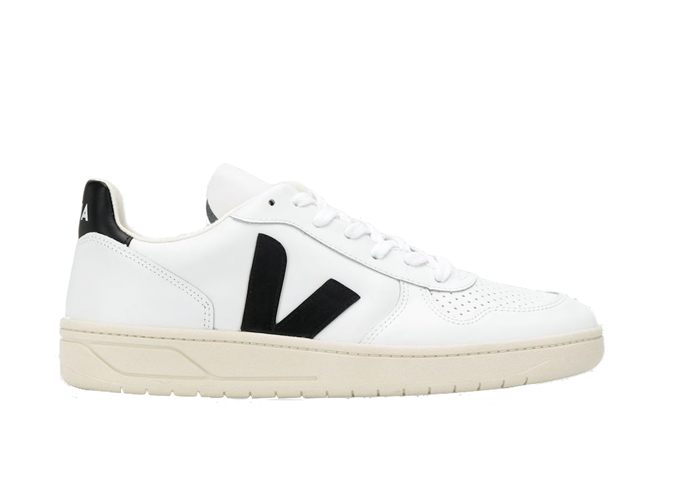
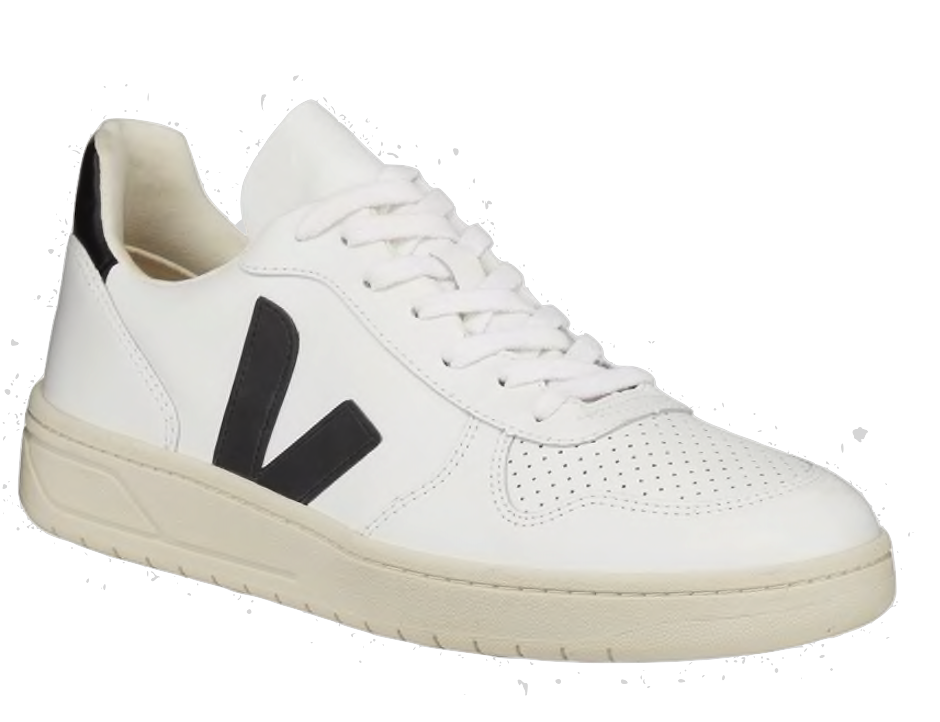
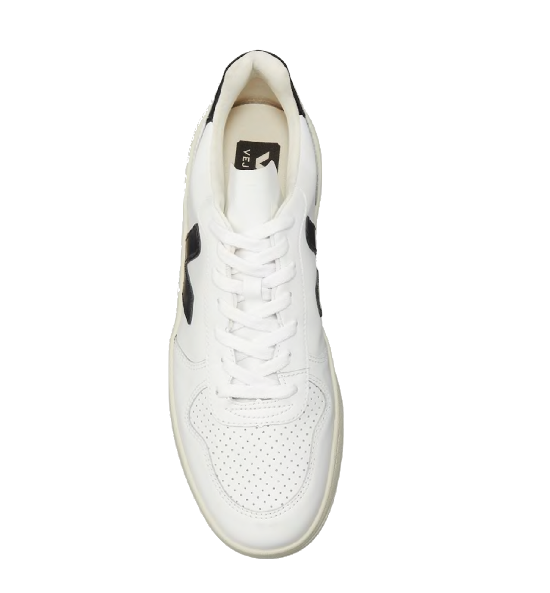
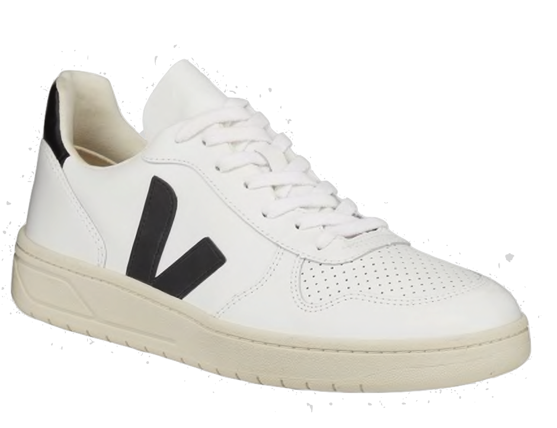
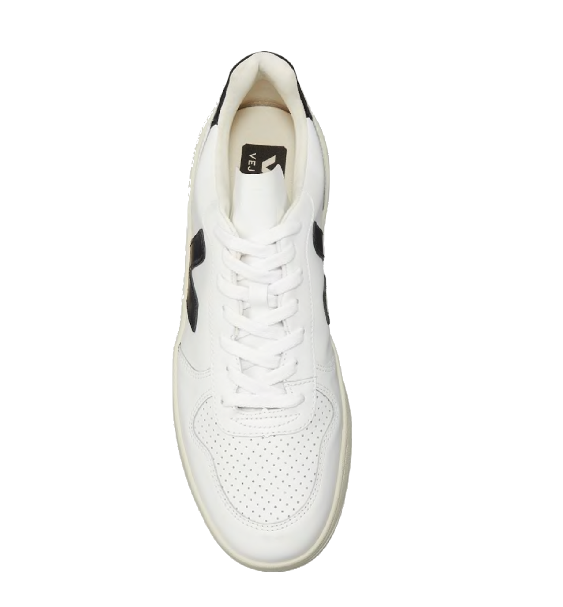

$ 155
VEJA V10
V10 Leather Sneakers
COLOR WHITE BEIGE BLACK
CHECK WEBSITE AVAILABILITY
WWW.VEJA.COM
HISTORY
- • Veja is a Parisian sustainable sneaker brand
- • Founded by Sébastien Kopp and François-Ghislain Morillion
- • Founded in 2004 in Paris, France and launched its first sneaker by 2005
- • Veja has only continued to grow in popularity as sustainability increasingly becomes a key component for consumers looking to connect with brands
- • From the get-go, ethical sourcing, transparency and social responsibility has been at the forefront for the founders
PRODUCT DETAILS
- • VEJA leather sneakers with contrast logo detail
- • Upper in leather
- • Panels made out of leather
- • Logo V made of rubber
- • Lining in jersey (33% organic cotton & 67% recycled polyester)
- • Insole made out of wild rubber and other synthetic materials
- • Sole made of wild rubber from the Amazonian forest (24%)
- • White laces
- • Tongue pull-on tab
- • Made in Brazil, in the region of Porto Alegre
- The V-10 model made out of ecological and sustainable materials stands for 10 years of love.
SPOTTED
- • Sneaker spotted in the West Village
- • Worn by a young adult on a coffee walk
- • Paired with a pair of wide, grey jeans and a white t-shirt
- • Check on footwear map